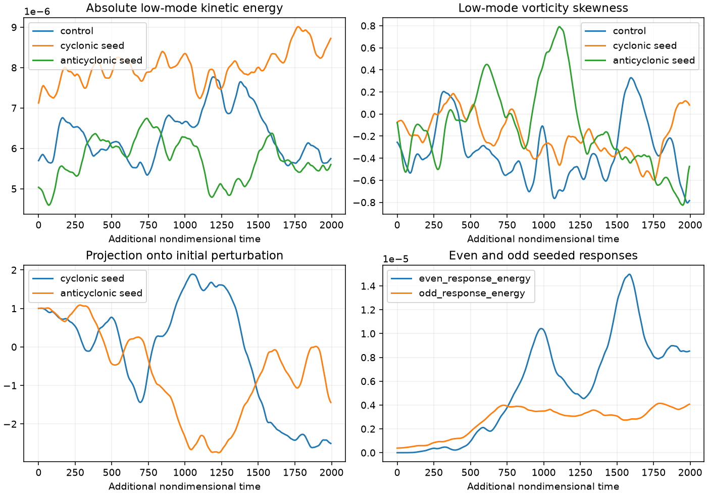
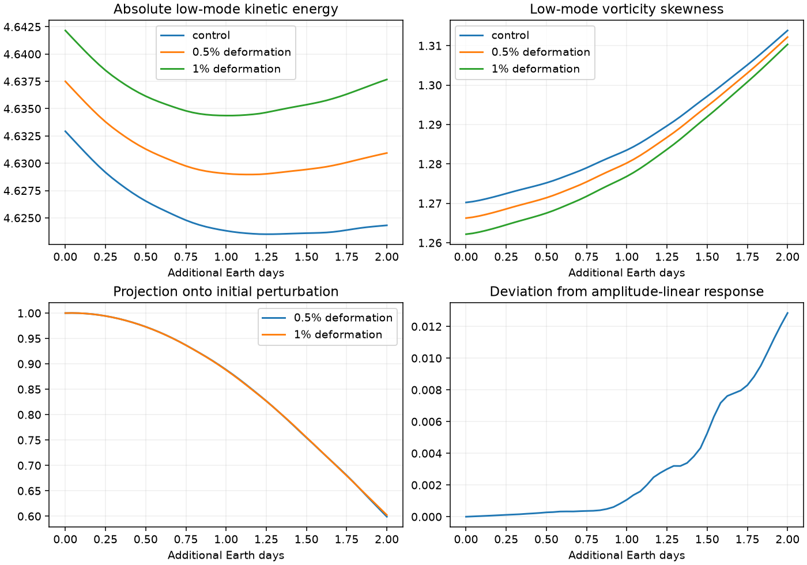
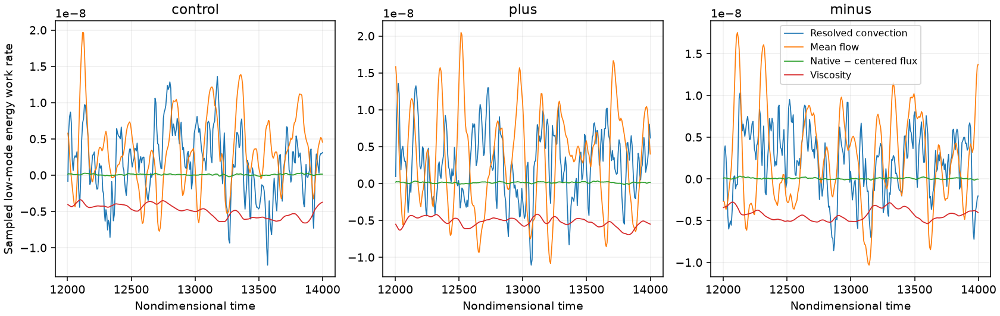

Vortex response and stability
All six experiments completed. The established cyclone survives the two-day deformation test without rapid perturbation growth. The new signed-seed experiments do not yet isolate a preferred vortex sign: the cyclonic-seed branch has more large-scale energy, but unequal overlap with the parent flow already gave it more starting energy.
All simulation, analysis, rendering and video validation ran on Unity. The six simulations used 87 min 42 s of GPU time; including the resolution/budget screen, the total was 99 min 59 s, below the 4¼-hour limit. No further simulations were launched by this status review.
1. Matched cyclonic and anticyclonic seeds
Three dry anelastic f-plane runs, unchanged heating and weak cap, 128²×64 in a doubly periodic 2×2×1 box. Each starts from the same developed t=12000 parent and reaches t=14000, adding 17.4–18.1 recorded convective turnover times. Added vortices have equal isolated energy, opposite signs, compensated circulation and peak |ζ/f|=0.1. Time is nondimensional, not Earth days.
Every movie is a synchronized 2×3 array: vorticity above passive concentration at z=0.1953, 0.6016 and 0.8984. All 400 saved frames, t=12005–14000, 40 seconds per movie. Color scales are fixed across time and depths within each movie; extrema differ between movies, so compare their colorbars. The tracer was already uniform at saved precision in the parent. Its blank panels reflect the data, not a failed color scale.
Unchanged parent
Open movie · Scales and frame metadata
Cyclonic seed: positive ζ/f
Open movie · Scales and frame metadata
Anticyclonic seed: negative ζ/f
Open movie · Scales and frame metadata
What this comparison does—and does not—show
The cyclonic-seed branch retains more energy in 0<|k|≤2. In the final 500 time units the mean energies are 6.00×10⁻⁶ (control), 8.45×10⁻⁶ (cyclonic seed) and 5.73×10⁻⁶ (anticyclonic seed). This is not a clean causal demonstration of sign preference. At the first saved frame, those energies were already 5.70, 7.12 and 5.04×10⁻⁶ respectively.
The isolated seed energy was 5.87×10⁻⁷, while its overlap with the parent contributed a cross term of ±9.65×10⁻⁷ to the initial native face-based horizontal energy. Those face-based quantities and the plotted filtered, centered energies are distinct diagnostics. Equal seed amplitudes therefore did not make the combined initial states equal in energy. One parent and one seed position also do not establish statistical significance.

The numerical accounting now passes a useful check, but thermal evolution, an eroded weak cap and the parent/seed cross term remain physical confounders. This set is informative about finite-time responses; it has not established spontaneous anticyclonic LSV formation.
2. Stability of the earlier established cyclone
Restart the earlier heated f-plane channel at day 100 and advance to day 102, retaining its 256²×64 grid, heating, cap, thermal controller, viscosity and vertical sponge. The two perturbations are broad quadrupolar streamfunctions with velocity RMS equal to 0.5% or 1% of the parent’s 3.419 m/s depth-mean RMS (0.0171 and 0.0342 m/s). This geometry and physical setup differ from the periodic-box experiment above.
49 hourly frames, days 100–102, 4.9 seconds per movie. Use ¼× to examine the evolution. Heights are 19.69, 59.06 and 100.31 km. Positive ζ/f is cyclonic. The same three-depth vorticity/tracer layout is retained.
Unchanged established cyclone
Open movie · Scales and frame metadata
0.5% deformation
Open movie · Scales and frame metadata
1% deformation
Open movie · Scales and frame metadata
The cyclone survives; strong damping is not demonstrated
All three flows retain a concentrated cyclone during the two-day interval. The two perturbation responses scale almost linearly: doubling the initial amplitude doubles the resulting velocity difference to within about 1.3% at the end.
The low-mode perturbation norm ends at about 98.7% of its initial value in both cases. Although projection onto the original deformation pattern falls to about 60%, this mostly reflects a changing pattern, not a comparable loss of perturbation amplitude. We see no rapid growing deformation for this template over two days, but neither strong damping nor long-term stability has been established.

3. Numerical transfer checks
The short 128²/256² developed-state comparison agreed to 4.17% in its mean resolved convective work over t=12005–12020. Native advection minus reconstructed centered-flux work was 2.67% of the resolved convective scale on the coarse grid and 0.83% on the fine grid. This is a short local screen, not long-time convergence.
In the longer responses, the native projected-energy budget closes on the sampled timesteps to below 2×10⁻¹⁰ of the mean absolute convective-work scale. The native-minus-centered-flux discrepancy is retained separately and is about 2–3% of that scale. Resolved convection supplies positive mean work to the low modes in all three runs.
| t=12050–14000 | Control | Cyclonic seed | Anticyclonic seed |
|---|---|---|---|
| Mean sampled convective work rate | 1.57×10⁻⁹ | 2.52×10⁻⁹ | 2.17×10⁻⁹ |
| Mean absolute flux discrepancy / convective scale | 2.41% | 3.15% | 2.09% |

Data and provenance
Detailed review and run metadata · Asset sizes and SHA256 checksums · Response diagnostics · Stability diagnostics · Launch record
Matched-response source · Established-vortex source · Final review source
Simulation jobs: 2084628/29/30 and 2084284, 2084407/08. Resolution screen: 2084242. Analysis/rendering: 2084676, 2084458; final review: 2086510. All six targets and all movie decodes passed. No raw model fields or checkpoints were transferred for publication.